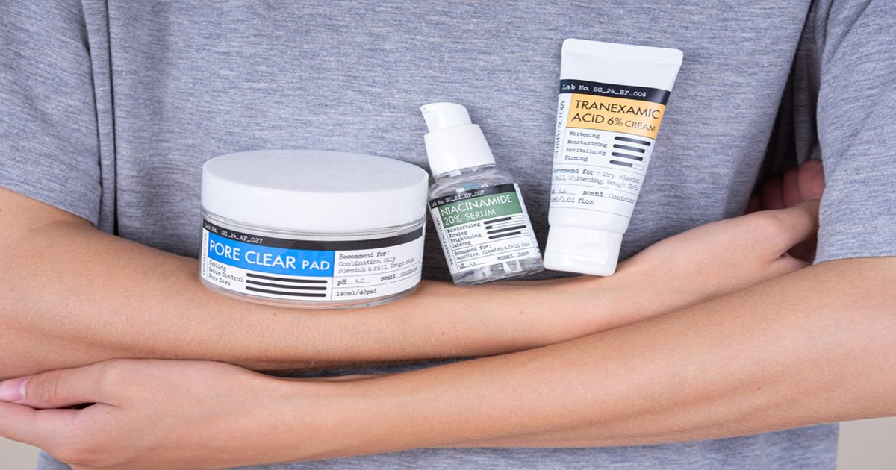

10 ошибок в уходе за проблемной кожей
С проблемной кожей легко попасть в ловушку: чем активнее пытаешься за ней ухаживать, тем сильнее она может бунтовать.
Как все-таки делать это правильно и какие ошибки совершают все (ну ок, почти все)?
Разбираемся с врачом-косметологом — на примере линии для проблемной кожи корейской марки Derma Factory.
Наш эксперт: Derma Factory — корейский бренд дерматологической косметики.
…
The post 10 ошибок в уходе за проблемной кожей first appeared on Beauty Insider.